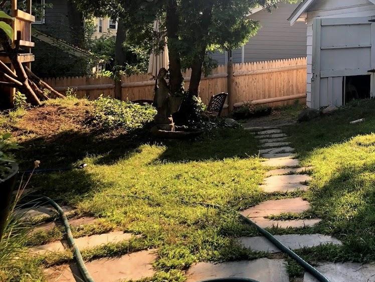
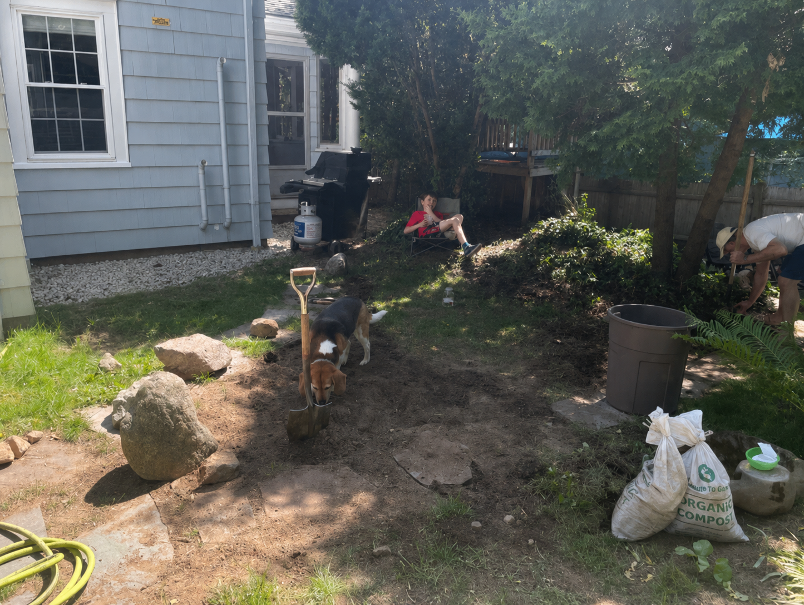

For Billy Lazzaro, Medford
This client was struggling to keep their lawn looking healthy in this corner of their yard. It was an unused small patch of grass (~80 sq ft), where their dog liked to rummage in the dirt. I designed and installed a shade garden — ripping out the old grass, amending the soil with compost, planting, and mulching around the new plants.
Fiddlehead ferns, meadowrue, iris, Canadian wild ginger, hostas, Solomon's seal, trout lily, shredded umbrella plant

